# create a vector of length 5 of type numeric
x <- numeric(5)
# it will be filled with zeros3 Premenné a dátové štruktúry
V tejto kapitole postupneme pokračujeme v spoznávaní Rka. Pozrieme sa na bežne používané objekty s ktorými budeme pracovať, či už premenné dátové štruktúry alebo iné užitočné funkcie.
3.1 Typy premenných
3.1.1 numeric
Objekt tohoto typu číslo. Môžeme prealokovať pamäť a vytvoriť objekt typu numeric. Štandardne bude tento objekt nula alebo vektor núl.
Ďalej sa môžeme opýtať či je daný objekt typu numeric pomocou is.numeric() Ak nie je, tak môžeme skonvertovať do numeric typu pomocou as.numeric(), pokiaľ sa to dá.
is.numeric(x)[1] TRUEy <- TRUE
is.numeric(y)[1] FALSEz <- as.numeric(y)
is.numeric(z)[1] TRUE3.1.2 character
Slová/texty sú typu character. Podobne ako pri iných typoch premenných, môžeme použiť funkcie character(), is.character() a as.character() na vytvorenie, overenie alebo konvertovanie.
f <- "Hello"
is.character(f)[1] TRUE3.1.3 logical
Logická (boolovská) premenná nadobúda hodnoty TRUE alebo FALSE. Akonáhle urobíme s logickou premennou nejakú aritmetickú operáciu, Rko ju automaticky skonvertuje na číselnú (numeric).
2+2 > 5[1] FALSE10+(2+2 > 5)[1] 10Logické premenné sú tiež doležité na skúmanie podmnožín
height <- c(1.75, 1.80, 1.65, 1.90, 1.74, 1.91)
height > 1.70[1] TRUE TRUE FALSE TRUE TRUE TRUEind <- (height > 1.75)
height[ind][1] 1.80 1.90 1.91Funkcia which() vráti indexy súradníc vektora typu logical, ktoré nadobúdajú hodnoty TRUE. Na 0-1 vektor typu numeric nefunguje.
which(height > 1.70)[1] 1 2 4 5 63.1.4 factor
Faktorová premenná (factor) je užitočná na prácu s informáciami, ktoré sú v nenumerickom tvare. Môžeme mať usporiadané faktory (silne nesúhlasím, nesúhlasím, nemám názor, súhlasím, silne súhlasím.) alebo neusporiadané faktory (modrá, žltá, zelená…).
carColors <- c("red","red","blue","yellow","salmon","white","grapefruit","white","black")
fcarColors <- as.factor(carColors)
fcarColors[1] red red blue yellow salmon white grapefruit
[8] white black
Levels: black blue grapefruit red salmon white yellowpain <- c(0,3,2,2,1)
fpain <- factor(pain,levels=0:3, ordered = TRUE)
levels(fpain) <- c("none","mild","medium","severe")
fpain[1] none severe medium medium mild
Levels: none < mild < medium < severe3.1.5 Iné
Existujú všelijaké iné typy premenných, napríklad complex pre komplexné čísla, integer pre celé čísla alebo napríklad date pre dátumy.
3.2 Typy dátových štruktúr
3.2.1 vector
Vektor je skupina objektov rovnakého typu. Nemusí nutne ísť len o čísla.
3.2.2 matrix
Matica je tabuľka objektov rovnakého typu.
3.2.3 array
Pole je skupina objektov rovnakého typu, môže mať aj viac ako 2 dimenzie.
3.2.4 list
Zoznam sa používa na objekty, ktoré sú rôzneho typu.
3.2.5 data.frame
Dátová tabuľka je jedným zo základných objektov, ktoré používa ako vstup mnoho súčastí R. Na rozdiel od matice môže mať viacej typov dát. Dátová tabuľka je v podstate špeciálnym typom zoznamu, kde komponenty musia byť vektory.
Nasledujúce užitočné funkcie umožňujú efektívnu prácu s objektom typu data.frame.
head()- vypíše hlavičku tabuľky, takže prvých 6 riadkovtail()- vypíše koniec tabuľky, takže posledných 6 riadkovdim()- dimenzie tabuľkynrow()- počet riadkovncol()- počet stĺpcovnames()- mená vektorov, ktoré tvoria dátovú tabuľkusapply(df,class)- funkcia, ktorá vypíše typ jednotlivých vektorov v rámci danéhodata.frames názvomdf
3.3 Vlastné funkcie
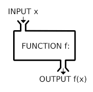
Zadefinujeme si funkciu nasledovne.
myfunction <- function(a, b, c=5){
x <- a+b
return(x*c)
}Čo bude výsledkom myFunction(2,3) a myFunction(2,3,4) ?
3.4 for cyklus
Nasledujúci kód sčíta všetky čísla od 1 po 1000
x <- 0
for(iNumber in 1:1000) {
x <- x + iNumber
}
x[1] 500500Index iNumber prechádza, cez všetky čísla vo vektore 1:1000 a vykoná všetky operácie, ktoré sú v kučeravých zátvorkách.
Podobne môžeme prechádzať cez vektor iných objektov ako je číslo. Tu budeme prechádzať cez vektor textov.
persons <- c("Martin", "Elena", "Chryzogóm", "Lucia")
for(iPerson in persons) {
print(iPerson)
}[1] "Martin"
[1] "Elena"
[1] "Chryzogóm"
[1] "Lucia"Rovnaký výstup dostaneme, ak budeme prechádzať cez indexy.
persons <- c("Martin", "Elena", "Chryzogóm", "Lucia")
for(iNumber in 1:4) {
print(persons[iNumber])
}[1] "Martin"
[1] "Elena"
[1] "Chryzogóm"
[1] "Lucia"3.5 Knižnice
Knižnice (libraries) sú kolekciou rôznych funkcií. Niektoré knižnice sú vytvorené priamo tvorcami R, ako napríklad base, iné nadšencami, ako napríklad causalweight. Ak chceme používať príkazy z nejakej knižnice, musíme ju mať nainštalovanú a musíme ju zavolať. Napríklad populárna knižnica ggplot2 slúži na tvorbu vizualizácií. Najprv musíte spustiť príkaz install.packages("ggplot2") a z online repozitára sa stiahne táto knižnica na Váš počítač.
library(ggplot2)
ggplot(diamonds) + geom_point(aes(x=carat, y=price, color=cut))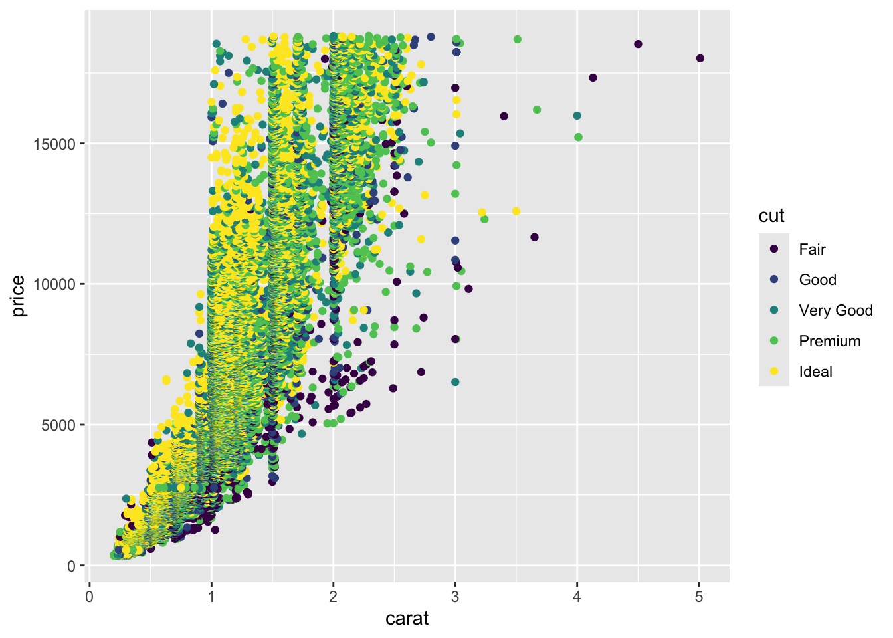
Ak do konzoly napíšeme ?ggplot ukáže sa nám podrobná dokumentácia. Väčšina knižníc má svoju vignette, kde je nárornou formou stručne vysvetlená základná funkcionalita danej knižnice.
3.6 Štandardy
“Good coding style is like correct punctuation: you can manage without it, butitsuremakesthingseasiertoread.”
— Hadley Wickham
Je dobrou praxou písať pekný kód. Čo to znamená? Napríklad:
loadData.R- názov funkcie alebo skriptu - veľké písmeno na začiatku ďalšieho slova. Aleboload_data.R<-- priradenie. Používajte namiesto=- Nie je dobré písať príliš dlhé riadky.
getConvReel_11- dávajte zrozumiteľné názvy funkciám- vyvarujte sa dvojitím záporom, sú nezrozumiteľné
- okolo
=,+,-,<-nechávajte medzeru, nech sa to lepšie číta - píšte veľa komentárov (#najlepsie bez makcenov a dlznov) a odsadzujte slová
- píšte kód tak, aby ho vedel čítať niekto po vás s minimálnou námahou
Mnoho odporúčaní je tu: https://style.tidyverse.org a tu: https://google.github.io/styleguide/Rguide.html
3.7 Časté chyby
- Neporiadok v kóde - čítať neporiadny kód je bolesť. Niekedy je aj vlastný kód po pár mesiacoch úplne nečitateľný. Špeciálna bolesť je čítat cudzí neporiadny kód.
(0.1 + 0.2) == 0.3- treba si dávať pozor na to, ako počítač reprezentuje čísla.- zlé ozátvorkovanie - viacej zátvoriek je skoro vždy lepšie. Keď sa neviete rozhodnúť č’i pridať zátvorku, pridajte ju. Sú lacné.
- chýbajúca knižnica - je dobrou praxou na začiatku programu inicializovať všetky knižnice, ktoré sú potrebné na spustenie.
- nekompatibilné objekty - veľmi často sa robia operácie s nekompatibilnými objektami. Pokiaľ Rko neviem automaticky skonvertovať objekty na kompatibilné, tak vyhlási chybu. Niekedy je však horšie keď chybu ani nevyhlási, niečo urobí a chyba sa môže ukázať na úplne inom mieste.
3.8 Demonštrácia v R
Na začiatku musíme načítať knižnice, ktoré budeme potrebovať. Nejaké môžeme načítať aj neskôr,
#This package contains the datasets used in ISwR book
library(ISwR)
#load the package "survival"
#you may need to install it first
#install.packages("survival")
library(survival)
Attaching package: 'survival'The following object is masked from 'package:ISwR':
lungDo premennej pridáme hodnotu použitím ->. Rko automaticky vyhodnotí o aký objekt ide. Objekt f bude typu numeric a objekt g bude typu character.
f <- 14
g <- "seven"Môžeme sa mechanicky pozrieť, ktoré premenné máme v pamäti (funkcia ls()). Vymazať všetko v pamäti môžeme pomocou rm(list=ls()).
#list all the variables in the memory
ls() [1] "carColors" "f" "fcarColors" "fpain" "g"
[6] "height" "ind" "iNumber" "iPerson" "myfunction"
[11] "pain" "persons" "x" "y" "z" Ak chceme pridať všetky premenné z nejakej dátovej tabuľky, použijeme attach().
# thuesen is a name of a dataset in the ISwR package
# it is not in the global environment
thuesen blood.glucose short.velocity
1 15.3 1.76
2 10.8 1.34
3 8.1 1.27
4 19.5 1.47
5 7.2 1.27
6 5.3 1.49
7 9.3 1.31
8 11.1 1.09
9 7.5 1.18
10 12.2 1.22
11 6.7 1.25
12 5.2 1.19
13 19.0 1.95
14 15.1 1.28
15 6.7 1.52
16 8.6 NA
17 4.2 1.12
18 10.3 1.37
19 12.5 1.19
20 16.1 1.05
21 13.3 1.32
22 4.9 1.03
23 8.8 1.12
24 9.5 1.70#it has to be called like this
thuesen$blood.glucose [1] 15.3 10.8 8.1 19.5 7.2 5.3 9.3 11.1 7.5 12.2 6.7 5.2 19.0 15.1 6.7
[16] 8.6 4.2 10.3 12.5 16.1 13.3 4.9 8.8 9.5#attach the whole dataset
attach(thuesen)
#and access is directly
blood.glucose [1] 15.3 10.8 8.1 19.5 7.2 5.3 9.3 11.1 7.5 12.2 6.7 5.2 19.0 15.1 6.7
[16] 8.6 4.2 10.3 12.5 16.1 13.3 4.9 8.8 9.5Takýmto spôsobom zadefinujeme novú funkciu.
myfunction <- function(a, b, c=5){
return(a*b*c)
}
myfunction(1,2,4)[1] 8myfunction(1,2)[1] 10Funkcie môžeme mať v rámci skriptu alebo ako separátne súbory typu subor.R. Pomocou setwd() nastavíme working directory. Ak chcete vedieť v ktorom adresári ste, použite getwd().
setwd("/Users/lukaslaffers/Dropbox/pravdepodobnost a statistika 2/ISwR/scripts")
source("myfunction2.R")
myfunction2(1,2,4)Tu sú rôzne spôsoby ako vykresiť závislosť dvoch premenných. Funkcia with(table,fun) vyhodnotí fun na dátovej tabuľke table.
attach(thuesen)The following objects are masked from thuesen (pos = 3):
blood.glucose, short.velocityplot(blood.glucose, short.velocity)
plot(thuesen$blood.glucose, thuesen$short.velocity)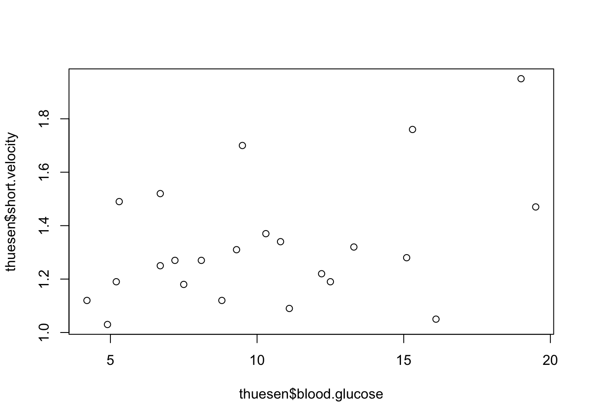
with(thuesen, plot(blood.glucose, short.velocity))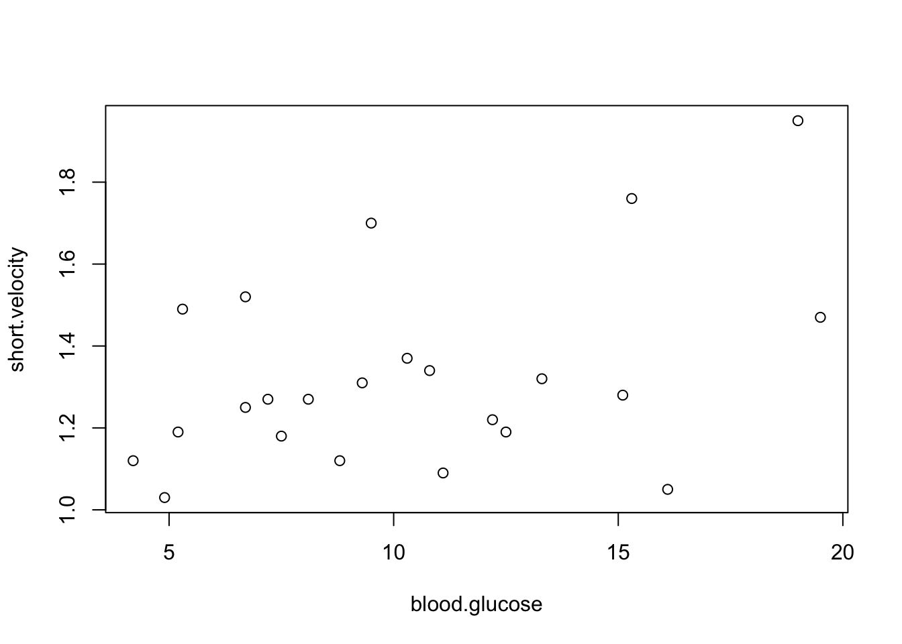
subset umožnuje vytvoriť podmnožinu dátovej tabuľky.
#choose a subset
thue2 <- subset(thuesen,blood.glucose<7)
thue2 blood.glucose short.velocity
6 5.3 1.49
11 6.7 1.25
12 5.2 1.19
15 6.7 1.52
17 4.2 1.12
22 4.9 1.03Pomocou setwd() vieme pridať ďalšiu premennú do dátovej tabuľky, napríklad transformovaním existujúcich premenných.
thue3 <- transform(thuesen,log.gluc=log(blood.glucose))
thue3 blood.glucose short.velocity log.gluc
1 15.3 1.76 2.727853
2 10.8 1.34 2.379546
3 8.1 1.27 2.091864
4 19.5 1.47 2.970414
5 7.2 1.27 1.974081
6 5.3 1.49 1.667707
7 9.3 1.31 2.230014
8 11.1 1.09 2.406945
9 7.5 1.18 2.014903
10 12.2 1.22 2.501436
11 6.7 1.25 1.902108
12 5.2 1.19 1.648659
13 19.0 1.95 2.944439
14 15.1 1.28 2.714695
15 6.7 1.52 1.902108
16 8.6 NA 2.151762
17 4.2 1.12 1.435085
18 10.3 1.37 2.332144
19 12.5 1.19 2.525729
20 16.1 1.05 2.778819
21 13.3 1.32 2.587764
22 4.9 1.03 1.589235
23 8.8 1.12 2.174752
24 9.5 1.70 2.251292thue2$log.gluc <- log(thue2$blood.glucose)Podobne within() modifikuje dátovú tabuľku (narozdiel of with(), ktorá len vytvorí nový objekt).
thue4 <- within(thuesen,{
log.gluc <- log(blood.glucose)
m <- mean(log.gluc)
centered.log.gluc <- log.gluc - m
rm(m)
})
thue4 blood.glucose short.velocity centered.log.gluc log.gluc
1 15.3 1.76 0.481879807 2.727853
2 10.8 1.34 0.133573113 2.379546
3 8.1 1.27 -0.154108960 2.091864
4 19.5 1.47 0.724441444 2.970414
5 7.2 1.27 -0.271891996 1.974081
6 5.3 1.49 -0.578266201 1.667707
7 9.3 1.31 -0.015958621 2.230014
8 11.1 1.09 0.160972087 2.406945
9 7.5 1.18 -0.231070001 2.014903
10 12.2 1.22 0.255462930 2.501436
11 6.7 1.25 -0.343865495 1.902108
12 5.2 1.19 -0.597314396 1.648659
13 19.0 1.95 0.698465958 2.944439
14 15.1 1.28 0.468721722 2.714695
15 6.7 1.52 -0.343865495 1.902108
16 8.6 NA -0.094210818 2.151762
17 4.2 1.12 -0.810888496 1.435085
18 10.3 1.37 0.086170874 2.332144
19 12.5 1.19 0.279755623 2.525729
20 16.1 1.05 0.532846250 2.778819
21 13.3 1.32 0.341791014 2.587764
22 4.9 1.03 -0.656737817 1.589235
23 8.8 1.12 -0.071221300 2.174752
24 9.5 1.70 0.005318777 2.251292Pri generovaní náhodných čísel (runif() generuje náhodné čísla rovnomerne medzi 0 a 1) je dobrým zvykom nastaviť seed generátora (pseudo)náhodných čísel. Takýmto spôsobom dostaneme všetci úplne totožné výsledky.
#plotting
set.seed(98453)
x <- runif(50,0,2)
y <- runif(50,0,2)Nakreslíme a modifikujeme graf. Tu vidíme, že vyskúšaním hneď pochopíte, čo daná funkcia robí bez toho, aby ste čítali dokumentáciu.
plot(x, y, main="Titulok", sub="subtitle",
xlab="x-label", ylab="y-label")
text(0.6,0.6,"text at (0.6,0.6)")
abline(h=.6,v=.6)
for (side in 1:4){
mtext(-1:4,side=side,at=.7,line=-1:4)
}
mtext(paste("side",1:4), side=1:4, line=-1,font=2)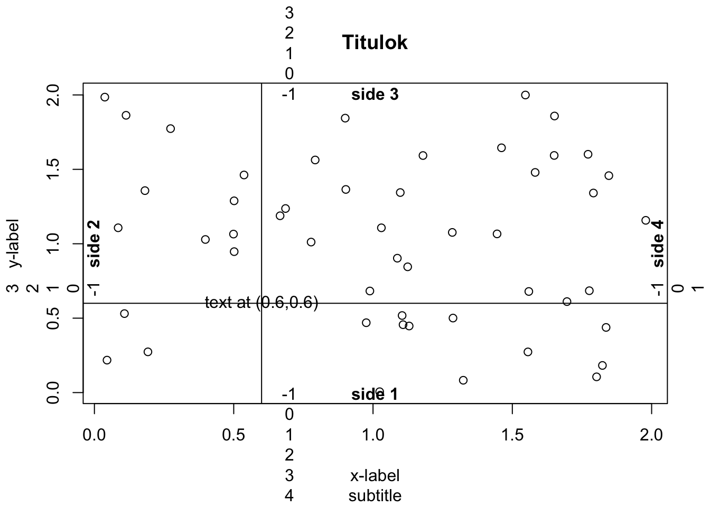
Podobne tu.
#empty figure
plot(x, y, type="n", xlab="", ylab="", axes=F)
#add elements one by one
#points
points(x,y)
axis(1)
axis(2,at=seq(0.2,1.8,0.2))
box()
title(main="Main title", sub="subtitle",
xlab="x-label", ylab="y-label")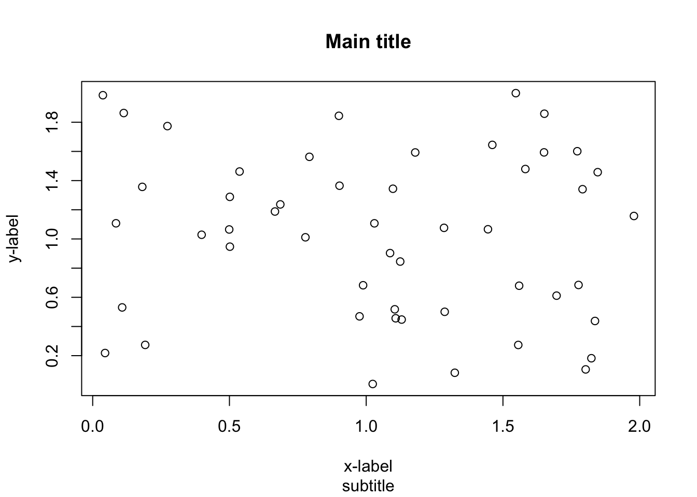
Tu sú rôzne varianty zobrazenia distribúcie
#in order to reproduce the graph exactly
# we need to fix the seed of the random number generator
set.seed(1234) #make it happen....
x <- rnorm(100000)
hist(x)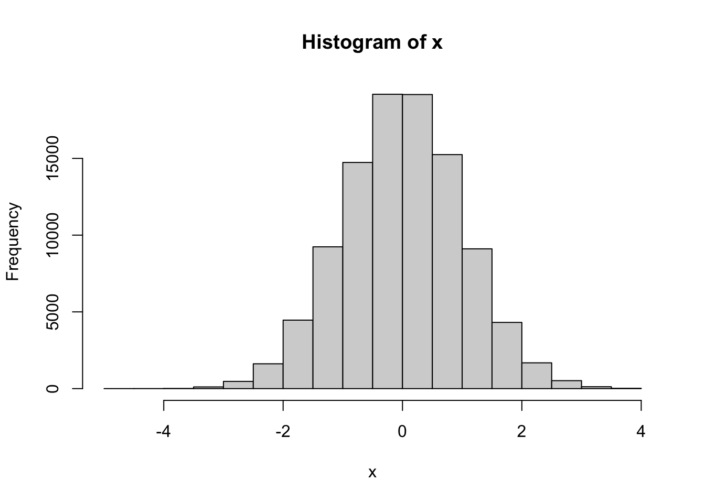
hist(x,freq=F)
curve(dnorm(x),add=T)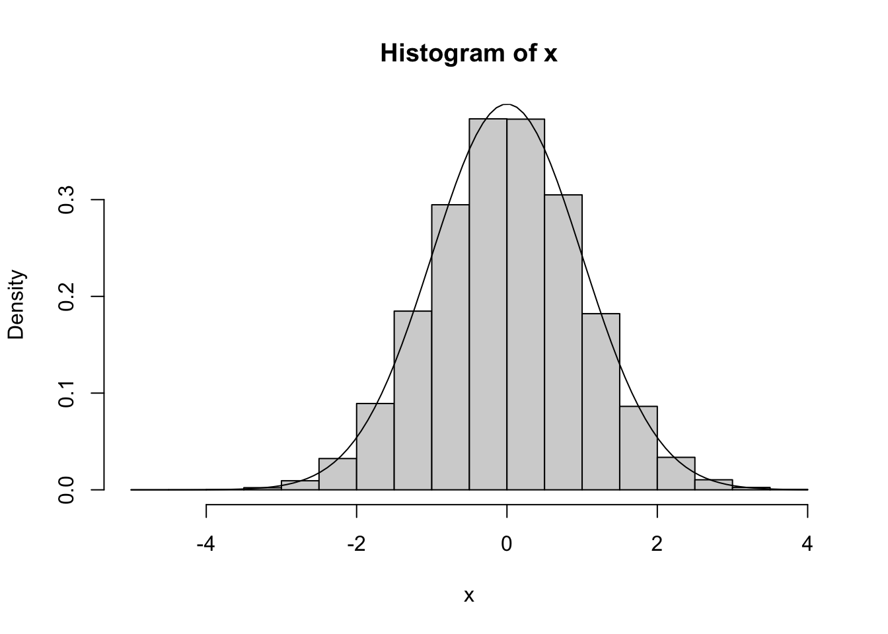
h <- hist(x, plot=F)
ylim <- range(0, h$density, dnorm(0))
hist(x, freq=F, ylim=ylim)
curve(dnorm(x), add=T) 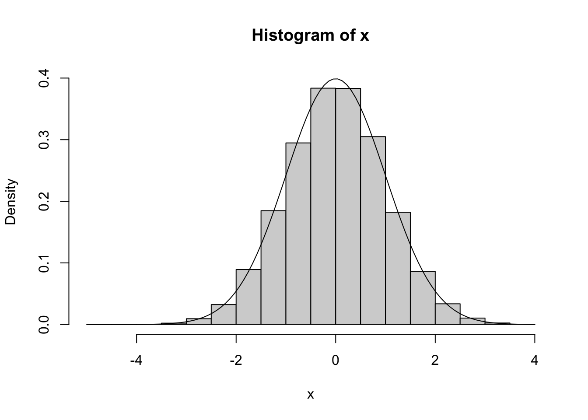
hist.with.normal <- function(x, xlab=deparse(substitute(x)),...)
{
h <- hist(x, plot=F, ...)
s <- sd(x)
m <- mean(x)
ylim <- range(0,h$density,dnorm(0,sd=s))
hist(x, freq=F, ylim=ylim, xlab=xlab, ...)
curve(dnorm(x,m,s), add=T)
}
a <- rnorm(100000)
hist.with.normal(a)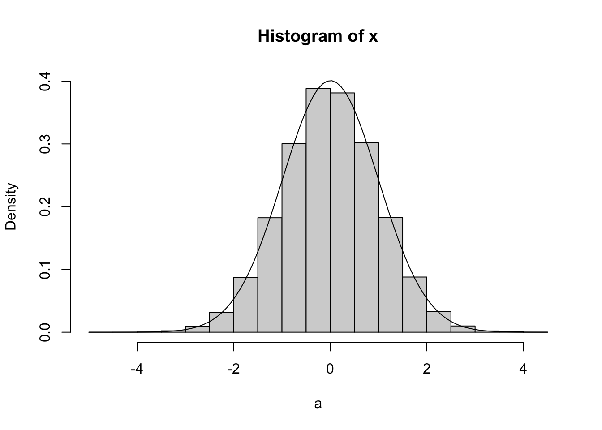
Naćítanie dát z tabuľky je zvyčajne prvým krokom akejkoľvek analýzy. Dáta prichádzajú v rôznych formách. Tu je zopár príkladov ako načítať dáta z rôznych typov súborov. Dôležité je, aby v adresári v ktorom sa nachádzame daný súbor aj naozaj bol.
######################################
#This part is not taken from ISwR book
######################################
#There are many different ways how can we load data to R
# and many different formats of the data
# Here we cover some of them:
# xlsx
# csv
# dat
# txt
# remember to set the current directory using setwd()
# You may check it using this command
getwd()[1] "/Users/lukaslaffers/Library/CloudStorage/Dropbox/pravdepodobnost a statistika 2/PAS2q"library(readxl)
#you may need to install it first
#install.packages("survival")Na otvorenie typu xlsx potrebujeme načítať novú knižnicu. Sú rôzne knižnice, ktoré toto vedia.
#working with datasets
data_card <- read_xlsx("card.xlsx")
# Data downloaded from https://davidcard.berkeley.edu/data_sets.html
# from paper:
# "Using Geographic Variation in College Proximity to Estimate the Return to Schooling".
# In L.N. Christofides, E.K. Grant, and R. Swidinsky, editors, Aspects of Labor Market
# Behaviour: Essays in Honour of John Vanderkamp. Toronto: University of Toronto Press, 1995.
# Data also here: https://docs.google.com/spreadsheets/d/116KwP9SJUQ8LZHeIH-sTvlFFwCgkKIsz86exk1I7O1s/edit#gid=943363882CSV súbor je častokrát preferovaný, lebo jeho forma nezávisí na verzii MS Excel.
#use read.csv to load comma-separated-value file
data_csv <- read.csv("card.csv")Ďalších častým formátom je .dat.
#we may save the dataset to a ".dat"
save(data_card, file="card.dat")
#then load it using load
load("card.dat")Natívne podporovaný formát je .RData.
#we may save the dataset to a ".RData"
save(data_card, file="card.RData")
#then load it using load
load("card.RData")Bežným je tiež .txt formát.
#use read.table to load a txt file
data_txt <- read.table("card.txt")Súbor, ktorý sťahujeme môže byť aj na internete.
#sometime the dataset is on the internet
#data_card <- read.table("https://lukaslaffers.github.io/files/card.txt")
data_card <- read.table("card.txt")Alebo v nejakej konkrétnej Rkovej knižnici.
#dataset may be already in some R-package
data(malaria, package="ISwR")Vždy sa pozeráme na sumár datasetu. Ten nás informuje o formátoch a charakteristikách jednotlivých premenných.
#look at the dataset
summary(data_card) id nearc2 nearc4 nearc4a
Min. : 2 Min. :0.0000 Min. :0.0000 Min. :0.0000
1st Qu.:1330 1st Qu.:0.0000 1st Qu.:0.0000 1st Qu.:0.0000
Median :2574 Median :0.0000 Median :1.0000 Median :0.0000
Mean :2610 Mean :0.4318 Mean :0.6781 Mean :0.4921
3rd Qu.:3908 3rd Qu.:1.0000 3rd Qu.:1.0000 3rd Qu.:1.0000
Max. :5225 Max. :1.0000 Max. :1.0000 Max. :1.0000
nearc4b ed76 ed66 age76
Min. :0.000 Min. : 0.00 Min. : 0.00 Min. :24.00
1st Qu.:0.000 1st Qu.:12.00 1st Qu.: 9.00 1st Qu.:25.00
Median :0.000 Median :13.00 Median :11.00 Median :28.00
Mean :0.186 Mean :13.23 Mean :10.74 Mean :28.18
3rd Qu.:0.000 3rd Qu.:16.00 3rd Qu.:12.00 3rd Qu.:31.00
Max. :1.000 Max. :18.00 Max. :18.00 Max. :34.00
daded nodaded momed nomomed
Min. : 0.00 Min. :0.0000 Min. : 0.00 Min. :0.0000
1st Qu.: 8.00 1st Qu.:0.0000 1st Qu.: 8.00 1st Qu.:0.0000
Median : 9.94 Median :0.0000 Median :11.00 Median :0.0000
Mean :10.00 Mean :0.2242 Mean :10.34 Mean :0.1143
3rd Qu.:12.00 3rd Qu.:0.0000 3rd Qu.:12.00 3rd Qu.:0.0000
Max. :18.00 Max. :1.0000 Max. :18.00 Max. :1.0000
weight momdad14 sinmom14 step14
Min. : 75607 Min. :0.0000 Min. :0.0000 Min. :0.00000
1st Qu.: 123030 1st Qu.:1.0000 1st Qu.:0.0000 1st Qu.:0.00000
Median : 365200 Median :1.0000 Median :0.0000 Median :0.00000
Mean : 320318 Mean :0.7921 Mean :0.1002 Mean :0.03847
3rd Qu.: 405452 3rd Qu.:1.0000 3rd Qu.:0.0000 3rd Qu.:0.00000
Max. :1752340 Max. :1.0000 Max. :1.0000 Max. :1.00000
reg661 reg662 reg663 reg664
Min. :0.00000 Min. :0.000 Min. :0.000 Min. :0.00000
1st Qu.:0.00000 1st Qu.:0.000 1st Qu.:0.000 1st Qu.:0.00000
Median :0.00000 Median :0.000 Median :0.000 Median :0.00000
Mean :0.04456 Mean :0.155 Mean :0.194 Mean :0.06919
3rd Qu.:0.00000 3rd Qu.:0.000 3rd Qu.:0.000 3rd Qu.:0.00000
Max. :1.00000 Max. :1.000 Max. :1.000 Max. :1.00000
reg665 reg666 reg667 reg668
Min. :0.0000 Min. :0.000 Min. :0.0000 Min. :0.000
1st Qu.:0.0000 1st Qu.:0.000 1st Qu.:0.0000 1st Qu.:0.000
Median :0.0000 Median :0.000 Median :0.0000 Median :0.000
Mean :0.2095 Mean :0.093 Mean :0.1102 Mean :0.031
3rd Qu.:0.0000 3rd Qu.:0.000 3rd Qu.:0.0000 3rd Qu.:0.000
Max. :1.0000 Max. :1.000 Max. :1.0000 Max. :1.000
reg669 south66 work76 work78
Min. :0.00000 Min. :0.0000 Min. :0.000 Min. :0.0000
1st Qu.:0.00000 1st Qu.:0.0000 1st Qu.:1.000 1st Qu.:0.0000
Median :0.00000 Median :0.0000 Median :1.000 Median :1.0000
Mean :0.09355 Mean :0.4127 Mean :0.835 Mean :0.7351
3rd Qu.:0.00000 3rd Qu.:1.0000 3rd Qu.:1.000 3rd Qu.:1.0000
Max. :1.00000 Max. :1.0000 Max. :1.000 Max. :1.0000
lwage76 lwage78 famed black
Length:3613 Length:3613 Min. :1.000 Min. :0.00
Class :character Class :character 1st Qu.:3.000 1st Qu.:0.00
Mode :character Mode :character Median :6.000 Median :0.00
Mean :5.913 Mean :0.23
3rd Qu.:8.000 3rd Qu.:0.00
Max. :9.000 Max. :1.00
smsa76r smsa78r reg76r reg78r
Min. :0.0000 Length:3613 Min. :0.0000 Length:3613
1st Qu.:0.0000 Class :character 1st Qu.:0.0000 Class :character
Median :1.0000 Mode :character Median :0.0000 Mode :character
Mean :0.6947 Mean :0.3997
3rd Qu.:1.0000 3rd Qu.:1.0000
Max. :1.0000 Max. :1.0000
reg80r smsa66r wage76 wage78
Length:3613 Min. :0.0000 Length:3613 Length:3613
Class :character 1st Qu.:0.0000 Class :character Class :character
Mode :character Median :1.0000 Mode :character Mode :character
Mean :0.6427
3rd Qu.:1.0000
Max. :1.0000
wage80 noint78 noint80 enroll76
Length:3613 Min. :0.00000 Min. :0.0000 Min. :0.00000
Class :character 1st Qu.:0.00000 1st Qu.:0.0000 1st Qu.:0.00000
Mode :character Median :0.00000 Median :0.0000 Median :0.00000
Mean :0.08137 Mean :0.1068 Mean :0.09466
3rd Qu.:0.00000 3rd Qu.:0.0000 3rd Qu.:0.00000
Max. :1.00000 Max. :1.0000 Max. :1.00000
enroll78 enroll80 kww iq
Length:3613 Length:3613 Length:3613 Length:3613
Class :character Class :character Class :character Class :character
Mode :character Mode :character Mode :character Mode :character
marsta76 marsta78 marsta80 libcrd14
Length:3613 Length:3613 Length:3613 Length:3613
Class :character Class :character Class :character Class :character
Mode :character Mode :character Mode :character Mode :character
Vśimneme si, že premenná je typu faktor.
#IQ is apparently not a text
data_card$iq[1:5][1] "." "93" "103" "88" "108"Vieme ju skonvertovať na numerickú premennú tak, že ju najprv skonvertujeme na text.
#we may recode it
data_card$iqn <- as.numeric(as.character(data_card$iq))Warning: NAs introduced by coerciondata_card$wage78n <- as.numeric(as.character(data_card$wage78))Warning: NAs introduced by coercionA nakresliť.
#look at the association of IQ and wages
with(data_card,plot(iqn,wage78n))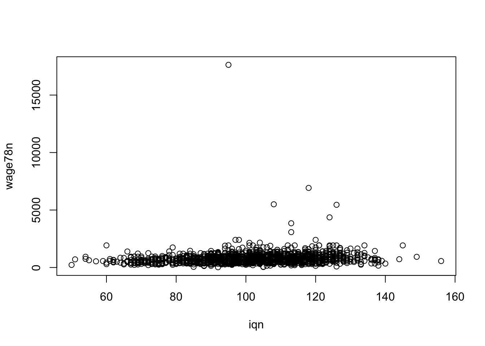
Rovnako nakreslíme závislosť IQ a mzdy pre tých, ktorý zarábajú menej ako 2000.
library(tidyverse)── Attaching core tidyverse packages ──────────────────────── tidyverse 2.0.0 ──
✔ dplyr 1.1.4 ✔ readr 2.1.5
✔ forcats 1.0.0 ✔ stringr 1.5.1
✔ lubridate 1.9.3 ✔ tibble 3.2.1
✔ purrr 1.0.2 ✔ tidyr 1.3.1
── Conflicts ────────────────────────────────────────── tidyverse_conflicts() ──
✖ dplyr::filter() masks stats::filter()
✖ dplyr::lag() masks stats::lag()
ℹ Use the conflicted package (<http://conflicted.r-lib.org/>) to force all conflicts to become errors#zoom for those who earned less than 2000
with(data_card %>% filter(wage78n<2000),plot(iqn,wage78n))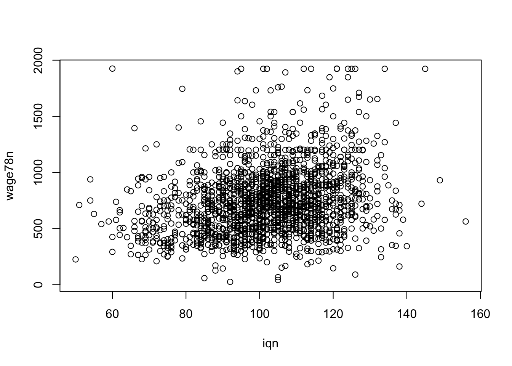
Kreslenie obrázkov a vizualizácia je zaujímavá kapitola sama o sebe.
#or more fancy graph
ggplot(data=data_card %>% filter(wage78n<2000), aes(x = iqn, y = wage78n)) +
geom_point() +
geom_smooth(method="lm", formula = y ~ x) +
geom_smooth(method="lm", formula = y ~ x + I(x^2), col="red")Warning: Removed 817 rows containing non-finite outside the scale range
(`stat_smooth()`).
Removed 817 rows containing non-finite outside the scale range
(`stat_smooth()`).Warning: Removed 817 rows containing missing values or values outside the scale range
(`geom_point()`).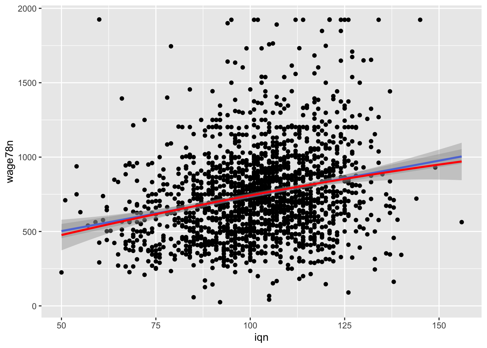
3.9 Cvičenia
Vráťme sa k príkladu
height <- c(1.75, 1.80, 1.65, 1.90, 1.74, 1.91)
ind1 <- (height > 1.75)
ind2 <- 1*ind1Podrobne vysvetlite, prečo height[ind1] a height[ind2] nedáva ten istý výstup.
Viete vysvetliť tento zdanlivý paradox?
(0.1 + 0.2) == 0.3[1] FALSEPoďme naspäť k cvičeniu 1.3 o filmoch.
Aký je rozpočet akčných filmov, vydaných po 1995?
Tu je pomôcka. Sú tu 4 rôzne spôsoby ako sa to dá robiť. Líšia sa najmä prehľadnosťou zápisu. Prehľadnejší kód znamená menší priestor pre chyby.
Spôsob 1. Indexovaním. Indexy si uchovávame:
#option 1
ind <- movies$year > 1995 & movies$Action==1
#look at column called "budget"
movies[ind,"budget"]
#or
# "budget" is in the 4th column
names(movies)
#look at the fourth column
movies[ind,4]Spôsob 2. Priamo indexovaním.
#option 2 directly (less readable)
movies[movies$year > 1995 & movies$Action==1,"budget"]
movies[movies$year > 1995 & movies$Action==1,4]Spôsob 3. Pomocou funkcie with().
#option 3 nicer
# use function with, takes dataset as the first argument
with(movies, budget[year > 1995 & Action==1])Spôsob 4. Pomocou knižnice dplyr
#option 4 much nicer (use dplyr package)
movies %>%
filter(year > 1995, Action==1) %>%
select(budget)Všimnite si, že posledný kód je oveľa čitateľnejší.
Teraz splňte nasledovnú úlohu:
Usporiadajte animované filmy s viac ako 1000 hodnoteniami, vydané po roku 1980, ktoré trvajú dlhšie ako 30 minút podľa hodnotenia od najlepšieho po najhorší.
(Možno použiť funkcie filter(), arrange() a desc().)
Vytvorte funkciu s menom bmi, ktorá dostane ako vstup výšku v cm a váhu v kg a jej výstupom bude BMI. Môžete uvažovať, že vstupy sú korektne zadané.
Pomocou for cyklu zrátajte
\[\begin{equation*} \sum_{i=1}^{350}\frac{i(i-1)}{i+2} \end{equation*}\]a
\[\begin{equation*} \prod_{i=1}^{350}\frac{i+1}{i+2} \end{equation*}\]Stiahnite si a načítajte dáta o kvalite červených vín. stadiaľto. Porozmýšľajte ako sú rôzne atribúty červeného vína asociované s jeho kvalitou (quality).
Stiahnite si a načítajte dáta o výkone študentov na rôznych testoch. stadiaľto. Porozmýšľajte ako je vzdelanie rodičov asociované s akademickým výkonom v rôznych oblastiach (math.score, reading.score, writing.score).